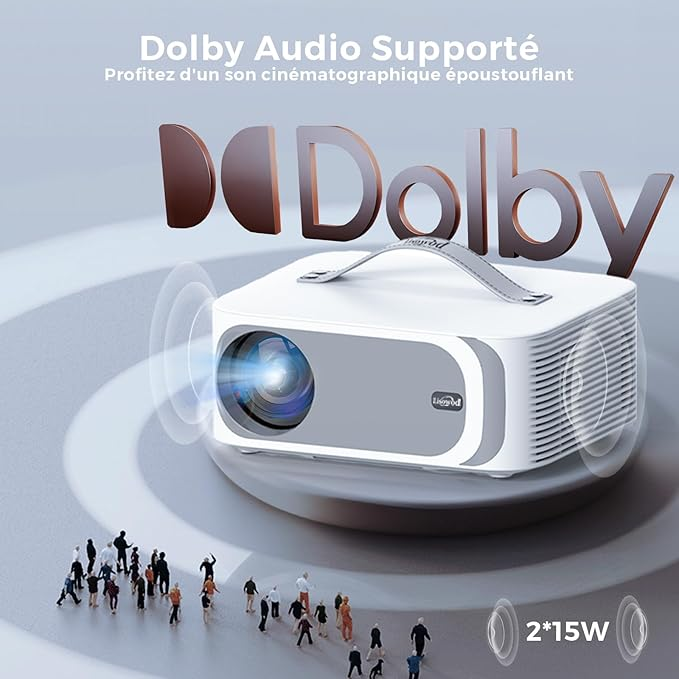
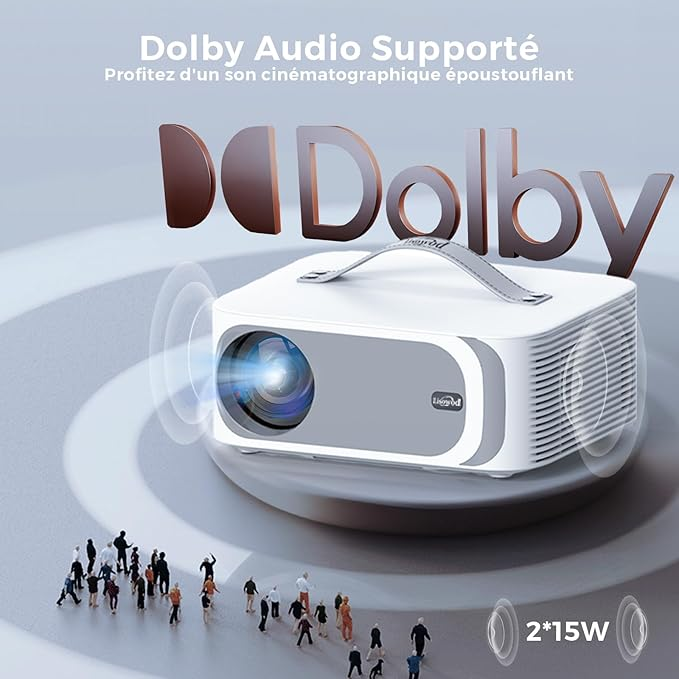

Videoprojecteur 4K 1080P Natif 36000Lux Projecteur Video, avec Movin, 4D/4P Keystone, Focus Électrique, WiFi6, Bluetooth Lisowod Retroprojecteur Portable pour Home Cinéma
599 TND 700 TND
Réponse Ultra-Rapide, Expérience Personnalisée - Nouveau Système d'Exploitation Intelligen Le videoprojecteur 4K intègre le système MOVIN, une technologie intelligente conçue spécifiquement pour les videoprojecteurs. Basé sur un OS de télévision intelligent et propulsé par des puces de la Silicon Valley, il offre une fluidité améliorée de 50% grâce à l'IA. Son interface DIY permet une navigation facile, même pour les utilisateurs novices. Ontrairement aux projecteurs Android TV non autorisés, il a été certifié par les applications pour garantir des mises à jour régulières et un système stable pour une expérience fluide